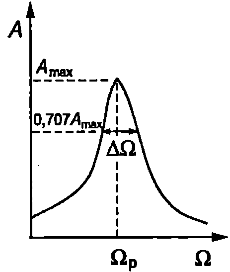
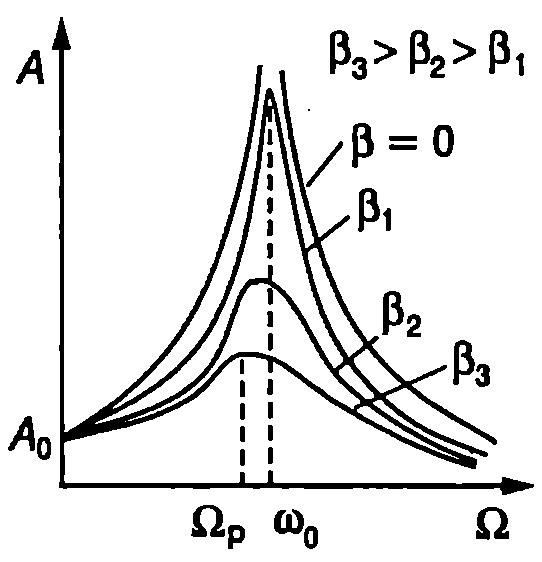

Трептенията в реалните механични системи затихват. Например поради триенето люлката скоро престава да се люлее. Необходими са периодични тласъци, за да се поддържа люлеенето. Трептяща система, в която действат сили на триене, може да извършва незатихващи трептения под действие на периодично изменяща се външна сила. Такива трептения се наричат принудени трептения.
Характеристики на принудените трептения
Когато на материална точка освен квазиеластична сила и сила на съпротивление действа и външна сила, която се изменя по синусов закон $$F = F_0 \sin\Omega t $$ с амплитуда $F_0$ и кръгова честота $\Omega$, тя извършва принудени хармонични трептения. Движението на материалната точка се описва с линейното диференциално уравнение $$\frac{d^2 x}{d t^2} + 2\beta \frac{dx}{dt} + \omega_0^2 x = \frac{F_0}{m} \sin \Omega t , $$ където $\omega_0$ е кръгова честота на свободните трептения, $\beta$ — коефициентът на затихване, а $m$ — масата на материалната точка. Решението на уравнение \eqref{eq:74.2} има вида (вж. стр.287) $$x(t) = x_1(t) + x_2(t) $$ където $x_1(t) = A_0 e^{- \beta t} \sin(\omega t + \varphi_0)$ е общото решение уравнение \eqref{eq:73.1}, а $x_2(t)$ е едно частно решение на нееднородното уравнение \eqref{eq:74.2}. Ще се спрем на физичната страна на процесите в трептящата система. Материалната точка извършва сложно движение, което е резултат от наслагване (суперпозиция) на две трептения затихващо трептене с отклонение $x_1(t)$ и принудено трептене с отклонение $x_2(t)$. С течение на времето трептенията $x_1(t)$ затихват (прекратяват се) и в края на този преходен процес в системата се установяват принудени трептения с постоянна амплитуда, чиято кръгова честота е равна на кръговата честота $\Omega$ на външната сила. Доказва се (вж. пример 74.1), че $$x(t) = x_2(t) = A \sin(\Omega t + \varphi), $$ където $$A = \frac{F_0}{m \sqrt{(\omega_0^2 - \Omega^2)^2 + 4\beta^2 \Omega^2}}, $$ $$\tan \varphi = -\frac{2\beta\Omega}{\omega_0^2 - \Omega^2}. $$ Параметърът $\varphi$ определя фазовата разлика между отклонението $x$ и външната сила $F$. Графиката на функцията $\varphi(\Omega)$ е представена на Фиг. \ref{fig:74.1}. При $\Omega = 0$ фазовата разлика е нула ($\varphi = 0$) Това е граничният случай, когато действа постоянна външна сила $F = F_0$ която само отмества равновесното положение на материалната точка на разстояние $\displaystyle A_0 = \frac{F_0}{m \omega_0^2}$, наречено статично отклонение.

`Фиг. 74.1`
Отклонението $x$ винаги изостава по фаза от външната сила. При $\Omega = \omega_0$ $\varphi = -\pi/2$ , т.е. отклонението изостава по фаза от външната сила с $\pi/2$ което означава, че външната сила е във фаза със скоростта (вж. уравнение \eqref{eq:70.9} на стр.178). При много големи кръгови честоти на външната сила ($\Omega \gg \omega_0$) отклонението $x$ и външната сила $F$ са в противофаза ($\varphi \to - \pi$) т.е. външната сила е във фаза с ускорението (вж. уравнение \eqref{eq:70.10} на стр.118). В областта на високите честоти $\displaystyle A \approx \frac{F_0}{m \Omega^2}$: амплитудата на принудените трептения намалява пропорционално на $1/\Omega^2$ като движението на материалната точка се определя единствено от нейната инертност (маса $m$). При много високи честоти, поради честата смяна на посоката на движение, отклонението и скоростта са много малки. Затова връщащата сила и силата на съпротивление, които са правопропорционални съответно на отклонението и на скоростта, имат много малки стойности и могат да се пренебрегнат. Уравнението на движение получава вида $ma = F$ което обяснява защо ускореннието а е във фаза с външната сила $F$.
Ще обърнем внимание, че амплитудата на принудените трептения, за разлика от амплитудата на собствените трептения, не зависи от началните условия, а само от параметрите на трептящата система и от външната сила. Постоянната амплитуда на установилите се принудени трептения показва, че външната сила извършва положителна работа и внася в системата механична енергия, която компенсира загубите, предизвикани от съпротивителните сили.
Пример 74.1
Покажете, че $x = A \sin(\Omega t + \varphi)$ е едно частно решение на уравнение \eqref{eq:74.2}. Определете параметрите $A$ и $\varphi$. \end{psexample}
Решение
Пресмятаме първата и втората производна на отклонението $x$ по времето $t$: $$\frac{dx}{dt} = \Omega A \cos(\Omega t + \varphi), \quad \frac{d^2 x}{dt^2} = -\Omega^2 A \sin(\Omega t + \varphi)$$
Заместваме двете производни в уравнение \eqref{eq:74.2}: $$-\Omega^2 A \sin(\Omega t + \varphi) + 2\beta \Omega A \cos(\Omega t + \varphi) + \omega_0^2 A \sin(\Omega t + \varphi) = \frac{F_0}{m} \sin \Omega t$$
С помощта на тригонометричните тъждества: $$\sin(\Omega t + \varphi) = \sin \Omega t \cos \varphi + \cos \Omega t \sin \varphi$$ и $$\cos(\Omega t + \varphi) = \cos \Omega t \cos \varphi - \sin \Omega t \sin \varphi$$
преобразуваме горното равенство във вида: $$\left[ (\omega_0^2 - \Omega^2) \cos \varphi - 2\beta \Omega \sin \varphi - \frac{F_0}{mA} \right] A \sin \Omega t + \left[ (\omega_0^2 - \Omega^2) \sin \varphi + 2\beta \Omega \cos \varphi \right] A \cos \Omega t = 0$$
Това уравнение се удовлетворява във всеки момент от времето (за всяко $t$), само ако коефициентите пред $\sin \Omega t$ и $\cos \Omega t$ са равни на нула: $$(\omega_0^2 - \Omega^2) \cos \varphi - 2\beta \Omega \sin \varphi - \frac{F_0}{mA} = 0; $$ $$(\omega_0^2 - \Omega^2) \sin \varphi + 2\beta \Omega \cos \varphi = 0. $$ От уравнение \eqref{eq:74.8} определяме $\tan \varphi$: $$\tan \varphi = \frac{\sin \varphi}{\cos \varphi} = -\frac{2\beta \Omega}{\omega_0^2 - \Omega^2}$$
Използваме получения резултат за $\tan \varphi$ и тригонометричното тъждество $\sin^2 \varphi + \cos^2 \varphi = 1$, за да изразим $\sin \varphi$ и $\cos \varphi$: $$\sin \varphi = \frac{-2 \beta \Omega}{\sqrt{(\omega_0^2 - \Omega^2)^2 + 4\beta^2 \Omega^2}}, \quad \cos \varphi = \frac{\omega_0^2 - \Omega^2}{\sqrt{(\omega_0^2 - \Omega^2)^2 + 4\beta^2 \Omega^2}}$$
Заместваме $\sin \varphi$ и $\cos \varphi$ в уравнение \eqref{eq:74.7} и определяме $A$: $$A = \frac{F_0}{m \sqrt{(\omega_0^2 - \Omega^2)^2 + 4\beta^2 \Omega^2}}$$
Резонанс
Както се вижда от формула \eqref{eq:74.5}, амплитудата на принудените трептения зависи от кръговата честота $\Omega$ на външната сила и от собствената кръгова честота на системата $\omega_0$. Зависимостта $A(\Omega)$ е представена графично на Фиг. \ref{fig:74.2}. Ако в системата нямаше триене ($\beta = 0$) , когато кръговата честота на външната сила се изравни със собствената кръгова честота на системата, амплитудата на принудените трептения би станала безкрайно голяма. В реалните системи нарастването на амплитудата зависи от коефициента на затихване $\beta$.
Явлението, при което амплитудата на принудените механични трептения рязко нараства, когато кръгова та честота на външната сила се доближи до собствената кръгова честота на трептящата система, се нарича резонанс.
Кръговата честота, при която амплитудата на принудените трептения е максимална, се нарича резонансна кръгова честота $\Omega_p$. Резонансната кръгова честота е равна на (вж. пример 74.2) $$\Omega_p = \sqrt{\omega_0^2 - 2\beta^2}. $$ Когато коефициентът на затихване е малък ($\beta \ll \omega_0$) резонансът настъпва при кръгова на външната сила приблизително равна на кръговата честота на собствените трептения ($\Omega_p \approx \omega_0$) В трептящи системи с голям на затихва не резонансът се отмества към по-ниските честоти (Фиг. \ref{fig:74.2}). Колкото по-малко е триенето, толкова по-силно нараства амплитудата на принудените трептения при резонанс.
Ако се изследва експериментално зависимостта $A(\Omega)$ от получената резонанс на крива може да се определи $Q$-факторът на трептящата система. Доказва се, че при слабо затихване на трептенията ($\beta \ll \omega_0$) Q-факторът е $$Q = \frac{\Omega_p}{\Delta\Omega}, $$

`Фиг. 74.3`

`Фиг. 74.2`
където $\Delta\Omega$ е ширината на резонансната крива на височина $\displaystyle\frac{A_{\max}}{\sqrt{2}} \approx0,!707A_{\max}$ от максималната амплитуда $A_{\max}$ (Фиг. \ref{fig:74.3}).
Може да се дадат различни за резонанс. При полет крилата на насекомите извършват до 120 трептения в секунда, докато броят на нервните импулси, които управляват тяхното движение, е само три. Импулсите обаче пристигат в такъв момент, че да се поддържат резонансни трептения с максимална амплитуда. Знаменитият тенор Енрико Карузо можел да разбие на парчета чаша, направена от качествено стъкло, изпявайки и задържайки за известно време определен тон. Това е възможно, когато тонът има честота, равна на собствената честота на трептене на чашата. Тогава звукът силно се поглъща и в чашата възникват резонансни трептения с голяма амплитуда.
В акустиката резонансът се използва за усилване на звука. В техниката той често е вреден, дори опасен, и се вземат мерки да бъде избегнат. Например собствената честота на трептене на корпуса на кораб или на вертолет трябва съществено да се различава от честотата на принудените трептения, които могат да се предизвикат при въртенето на гребния винт или на пропелера. В противен случай резонансните трептения с голяма амплитуда могат да предизвикат разрушения.
Влияние на трептенията върху човешкия организъм
Във всекидневието и в редица професии хората са подложени на различни вибрации. При движение по неравен път автомобилът извършва трептения, които се предават на пътниците и пораждат неприятни усещания. Люлеенето на корабите понякога предизвиква повръщане и морска болест. Физиологичният ефект върху организма зависи от честотата и от амплитудата на трептенията и от продължителността на тяхното действие. Особено неприятен за човека е диапазонът от 3 Hz до 7 Hz, в който попадат честотите на собствените трептения на тялото като цяло и на раменния пояс. Когато външните вибрации имат същите честоти, настъпва резонанс и амплитудата на принудените трептения на човешкото тяло е максимална. При по-високи честоти в резонанс могат да се окажат отделни части на тялото. Например главата трепти спрямо раменете със собствена честота около 20 Hz, а очните ябълки в гнездата си с честота около 35 Hz. Трептенията причиняват физиологични изменения в нервната система, вестибуларния апарат, зрението, речта и др. Силните вибрации водят до сериозни (понякога фатални) увреждания на дробовете, сърцето, мозъка и на други органи.
Пример 74.2
При каква кръгова честота на външната сила амплитудата на принудените трептения е максимална? В случай на слабо затихване ($\beta \ll \omega_0$) изразете максималната амплитуда чрез доброкачествеността на трептящата система. \end{psexample}
Решение
Трябва да изследваме функцията \eqref{eq:74.5} за максимум. За целта е достатъчно да намерим първата производна на подкоренната величина и да я приравним на нула: $$-4\Omega(\omega_0^2 - \Omega^2) + 8\beta^2 \Omega = 0,$$ откъдето определяме резонансната честота $$\Omega_P = \sqrt{\omega_0^2 - 2\beta^2}.$$
Заместваме резонансната честота в уравнение \eqref{eq:74.5} и за максималната амплитуда на трептенията получаваме $$A_{\text{max}} = \frac{F_0}{m \sqrt{4\beta^2 (\omega_0^2 - 2\beta^2) + 4\beta^2 (\omega_0^2 - \beta^2)}} = \frac{F_0}{2m\beta \sqrt{\omega_0^2 - \beta^2}}.$$
При малък коефициент на затихване $$A_{\text{max}} \approx \frac{F_0}{2m\beta \omega_0} = A_0 Q,$$ където $Q = \frac{\omega_0}{2\beta}$ е доброкачествеността на трептящата система (вж. формула \eqref{eq:73.9}), а $$A_0 = \frac{F_0}{m \omega_0^2}$$ е статичното отклонение.
Следователно, в трептяща система с малък коефициент на затихване резонансната амплитуда $A_{\text{max}}$ е $Q$ пъти по-голяма от статичното отклонение $A_0$, т.е. от отклонението от равновесното положение, което би предизвикала постоянна външна сила с големина, равна на амплитудата $F_0$ на променливата сила, предизвикваща принудените хармонични трептения.
Задачи
-
Пружинно махало извършва принудени трептения с амплитуда $A = 1$ cm под действие на хармонична сила с амплитуда $F_0 = 3$ N. Определете коефициента на еластичност $k$ на пружината, ако кръговата честота на принудените трептения е 2 пъти по-малка от собствената кръгова честота на махалото. Триенето се пренебрегва ($\beta = 0$).
-
Пружинно махало с маса $m$ извършва принудени трептения по закона $x = A\sin\Omega t$ под действие на сила $F = F_0 \sin(\Omega t + \pi/2)$ Определете коефициента на затихване $\beta$.
-
Определете резонансната кръгова честота на трептяща система, за която $\beta = \omega_0/4$ Направете числени пресмятания за $\omega_2 = 100~\mathrm{s^{- 1}}$
-
Собствената кръгова честота на пружинно махало е $\omega_0 = 10~\mathrm{s^{- 1}}$ Във вискозна среда махалото извършва затихващи трептения с кръгова честота $\omega = 8~\mathrm{s^{- 1}}$ Определете резонансната честота $\Omega_p$, на махалото в тази среда.
-
Под действие на постоянна сила $F_0$ пружината на махало се разтяга с $A_0 = 0,!1$ cm. Колко е амплитудата на резонансните трептения на това махало под действието на хармонична сила с амплитуда $F_0$? Доброкачествеността на системата е $Q = 40$.
-
Трептяща система извършва резонансни трептения с амплитуда $A_{\max} = 5$ cm. Определете амплитудата на принудените трептения на системата, ако кръговата честота на външната сила нарастне 2 пъти, без да се изменя нейната амплитуда $F_0$. Коефициентът на затихване е $\beta = 0,!1\omega_0$, където $\omega_0$ е собствената кръгова трептящата система.